Neet had finished his evening inspection of the food stash and was inspecting it again from his command post, a flat stone under the banyan tree. Buddy had chosen a pile of discarded cloth nearby. He wasn't sleeping. He was watching a particularly good piece of biscuit.
“Supplies secure,” Neet announced.
“They were secure the first time,” Buddy said.
Neet leaned forward for another look. If the food escaped now, it would have to pass three inspections on the way out.
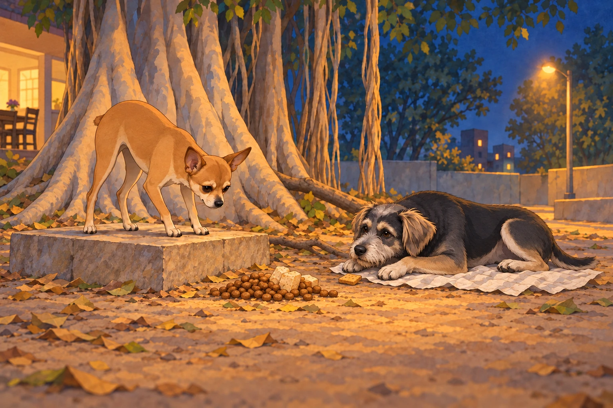
Chikki, the brown dog Buddy had befriended, reached toward the biscuit. Buddy put his nose in her way.
“That's for the white dog. He hasn't come back yet.”
Chikki looked down the lane. The lanky white dog had gone to investigate a cart that smelled of supper. He had announced that he was patrolling. Everyone had heard the cart.
“He might find something better,” she said.
Buddy looked at the biscuit again. This was a powerful argument. He nudged it farther onto the cloth before it persuaded him.
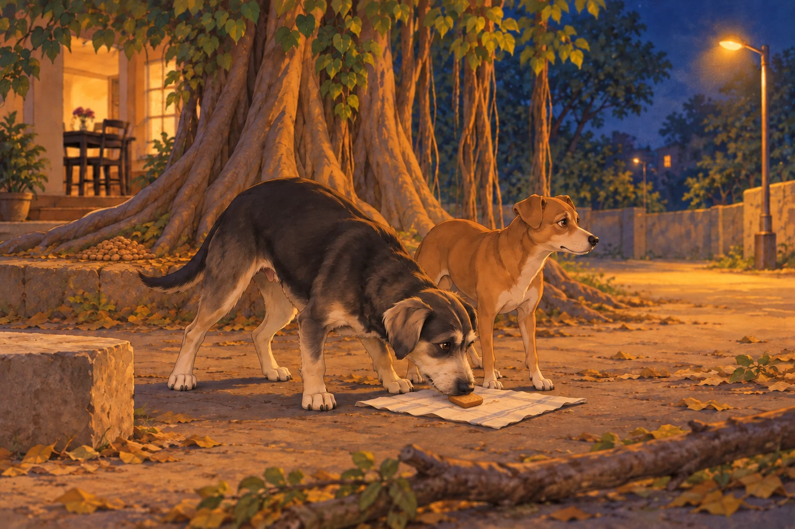
Heather had brought the dogs out earlier, unclipped their leashes beside the banyan and carried the leads back to the porch. Now she was inside the house, with its open windows and warm square of light. Buddy could see her passing through the kitchen. He wanted everyone to finish supper together before she called them home.
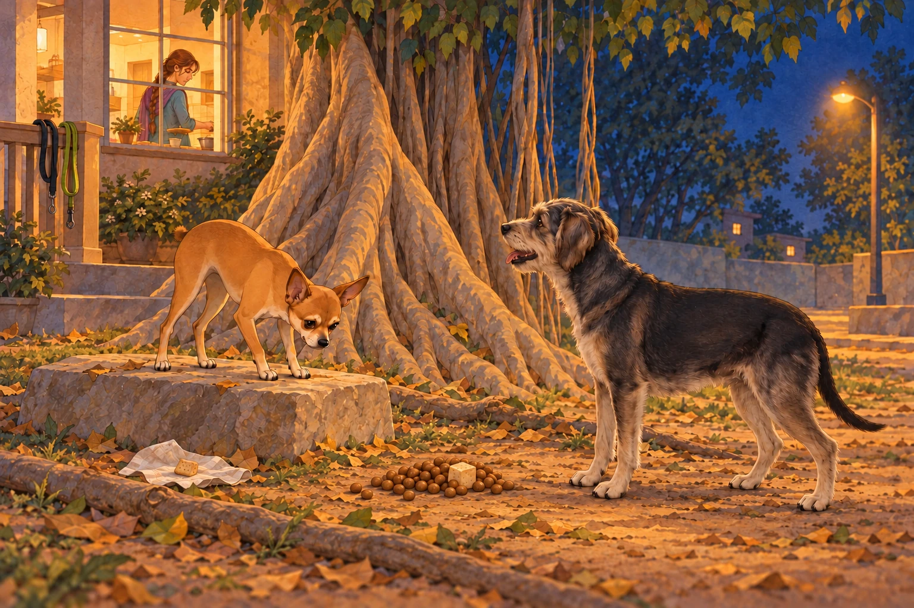
Neet descended from his rock to inspect the separated biscuit.
“All supplies go under the tree.”
“This is under the tree.”
“Together.”
Buddy moved the biscuit to the edge of the main stash, where several roots made a shallow hollow. Chikki helped pull the cloth underneath it. The scrappy terrier came over to help too, although his contribution consisted of opening his mouth.
Buddy blocked him.
“You're guarding food nobody may eat,” the terrier complained.
“Someone may eat it. He just isn't here.”
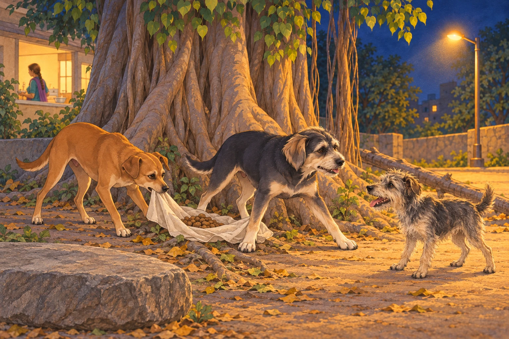
Neet returned to the rock, pleased that his supplies now required only one inspection. Buddy sat beside the cloth. He had arranged supper rather well. All it needed was supper.
There was a fallen branch between the command post and the lane. Neet stepped over it on his next inspection and immediately ordered Chikki to approach from the other side.
She walked around the tree.
“The other side of the branch,” he explained.
Chikki looked at him across the food.
“There are quite a lot of sides here.”
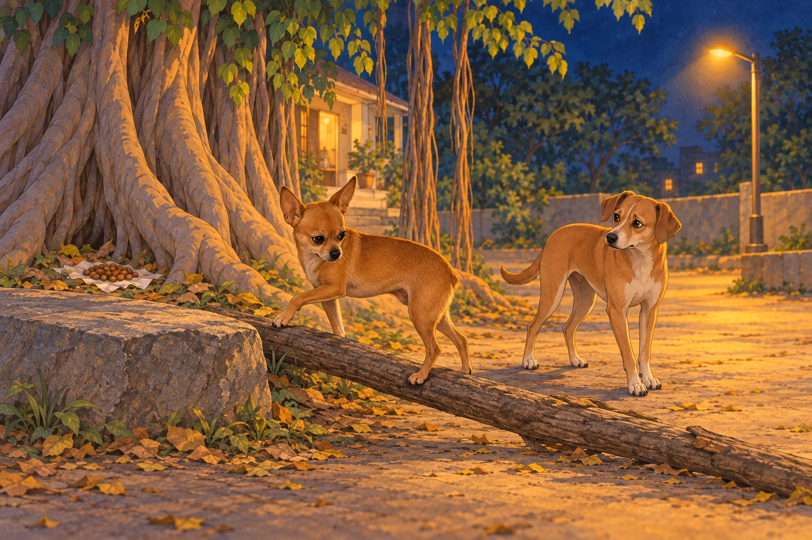
Shadow watched from the outer roots. His black coat almost disappeared beyond the streetlamp's light. Then, on that moonless night, he suddenly growled low in his throat.
The rest of the gang perked up. Buddy stopped considering the biscuit.
“What is it, Shadow?” Neet barked, jumping to his feet. His Dorito-shaped ears were upright, his little body tense. “Report!”
Shadow sniffed the air, his tail stiff. “Outsiders. More than one. And they're close.”
The white dog hurried back from the lane. He had found nothing at the cart, and something much less appetizing behind it.
“They're coming this way.”
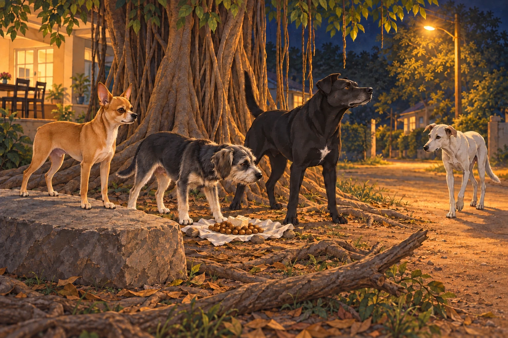
Neet planted his forepaws at the front edge of the rock and scanned his team.
“Everyone, to your positions!”
The gang scrambled into place around the banyan. Shadow moved to the lane, with the others beside him. Buddy stayed near Neet, keeping both the food and Heather's porch in view. He had picked a position with an excellent view of home. Unfortunately, it also had an excellent view of whatever was coming.
He glanced toward the white dog.
“Your biscuit's here.”
“Now?”
Buddy looked back at Shadow's stiff tail.
“Probably not now.”
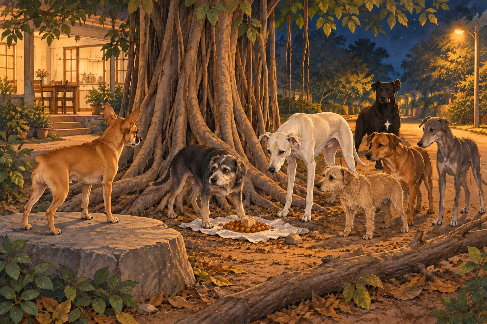
The silence was broken by a rustle of leaves. A group of dogs emerged from the darkness into the dim streetlamp glow: hounds, wiry terriers, a muscular boxer and a lanky greyhound. At their front stood a hulking mastiff with a torn ear and a jagged scar across his muzzle.
The greyhound's nose went straight toward the tree.
Buddy recognized that part. The golden retriever who had visited before had looked hungry too. He stepped a little way forward, leaving the cloth behind him.
“There's food,” he said cautiously. “You can wait while—”
The mastiff moved past him without waiting for anything.
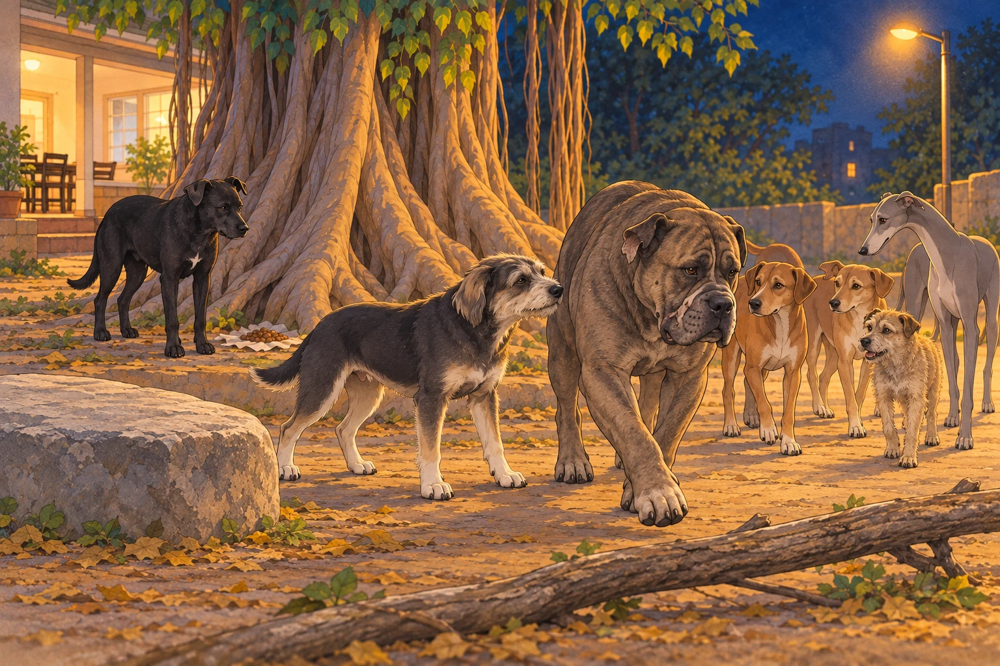
Neet sprang down from the rock. “Who dares enter my territory without permission?” he barked.
“Your territory?” the mastiff rumbled. “This patch of dirt belongs to no one, least of all a yapping toy like you.”
Neet bristled. Buddy withdrew to the roots. These visitors had brought a very different sort of conversation.
“Leave now, or face the consequences!” Neet snapped.
The mastiff's gang laughed. Then his expression hardened.
“We're not here to talk. We're here to take what's ours.”
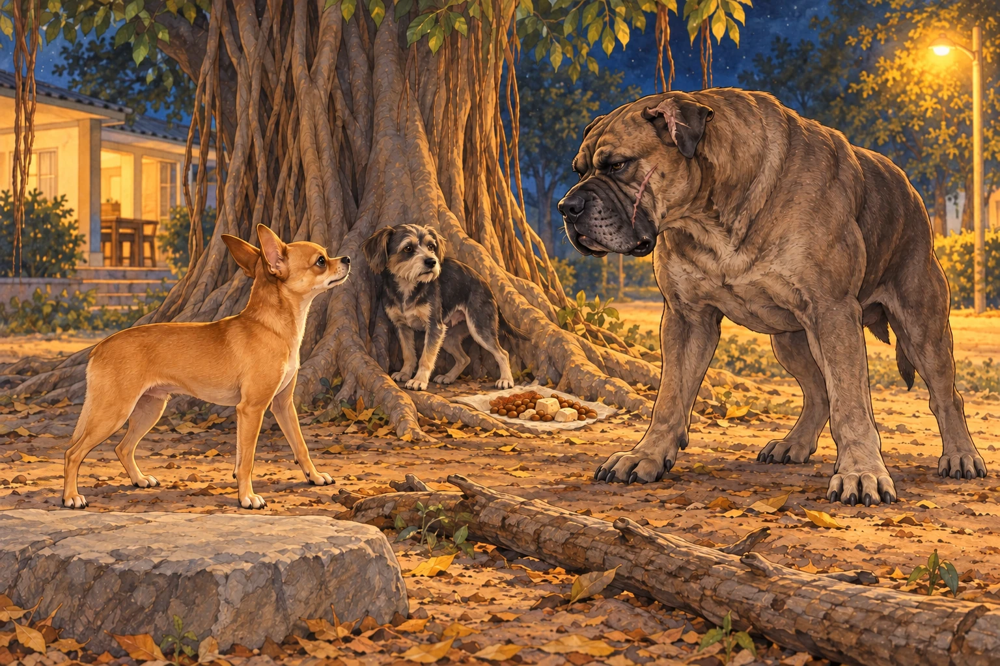
With a snarl, he lunged toward Neet. Shadow intercepted him, colliding with the larger dog in a flurry of teeth and claws. The others sprang forward to hold the line.
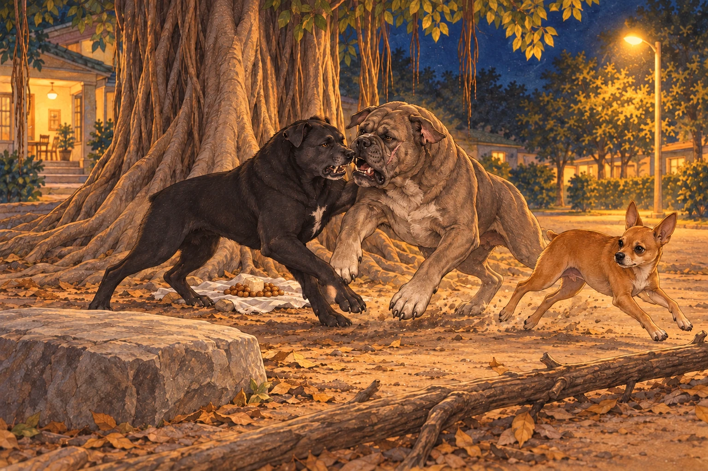
Buddy barked loudly toward the house. Heather's figure stopped in the kitchen window. He barked again. She vanished from the window, and he heard a drawer open inside.
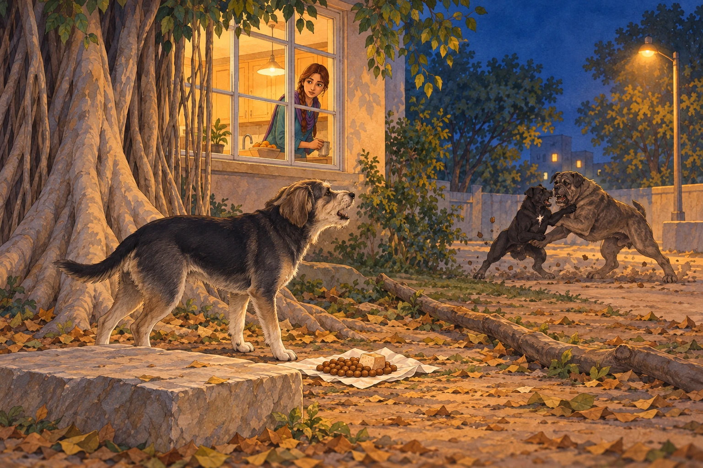
He started toward the porch. Behind him, claws scraped against a root.
The greyhound was circling the fight. Buddy stopped halfway between help and supper. The white dog had just joined Shadow's side; his biscuit lay unguarded with everybody else's food.
Buddy turned back.
“Buddy, stop him!” Neet barked, spotting the greyhound too.
Buddy sprang between the intruder and the stash. His bark came out so deep and sudden that he startled himself. He stayed put anyway.
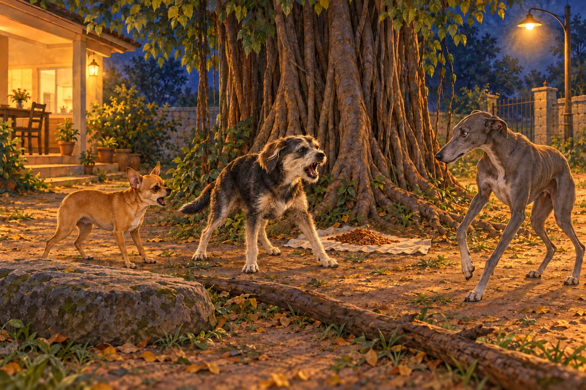
The greyhound tried a step to the left. Buddy took a step to the left. He tried the right. Buddy did too. This was less like fighting and more like being refused entry to supper.
“Move,” said the greyhound.
Buddy's legs had received that suggestion several times already.
“No.”
Chikki arrived at his shoulder after sending one of the wiry terriers stumbling away. The greyhound looked from one to the other, then back at the food.
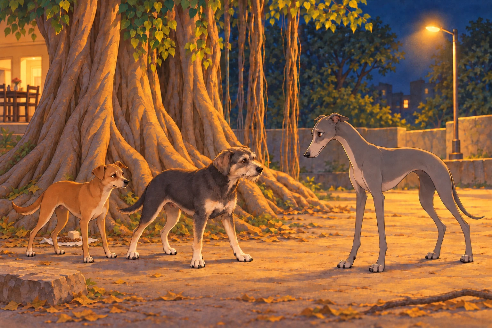
He darted toward Chikki, then changed direction. Buddy rushed to block him, leaving one corner of the cloth exposed.
The greyhound caught it in his teeth.
The food shifted. Buddy grabbed the opposite corner; Chikki planted her paws beside the hollow. For a moment all three dogs remained perfectly still, connected by supper.
Buddy's mouth was full of cloth. He could no longer produce his excellent deep bark. He managed a muffled sound instead.
Chikki looked at him.
“I know.”
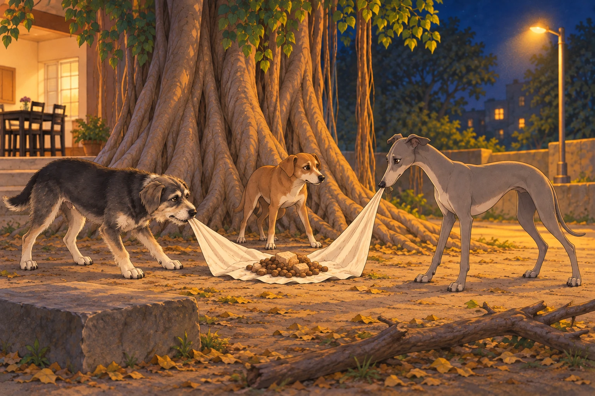
She stepped around the root toward the greyhound. He released the cloth to face her, and Buddy staggered backward with his corner. A biscuit bounced onto his paw.
He wanted to eat it. He wanted to run to Heather. He wanted the greyhound to go away without requiring either of them to be brave again.
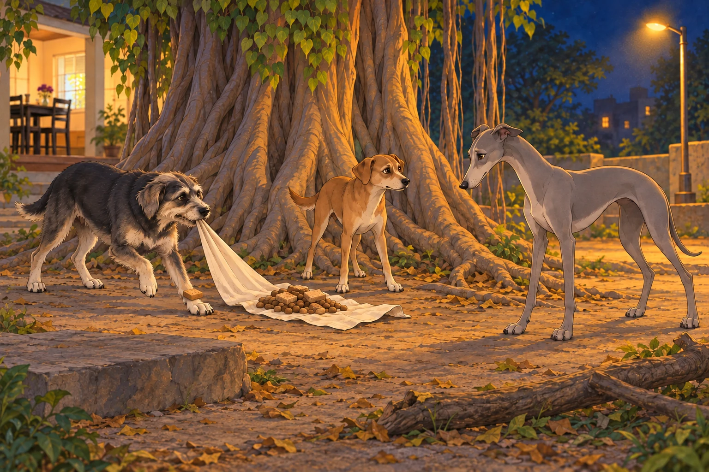
Instead, he dropped the cloth and stepped back beside Chikki.
Together they advanced, leaving the food tucked against the roots. The greyhound backed toward the lane. Buddy held his place when the intruder made one last hopeful glance around him.
“Still no,” Buddy said, now quite clearly.
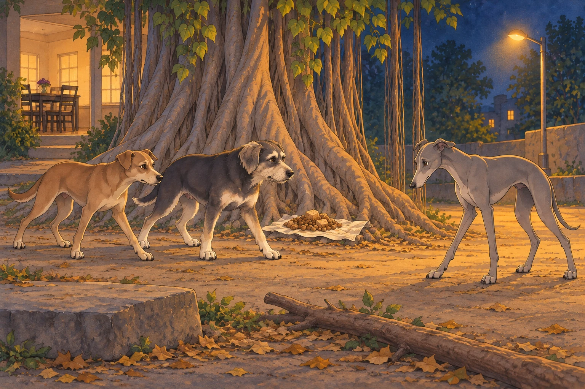
Meanwhile, Neet darted between the larger dogs, barking commands. Shadow held his own against the mastiff, while the other local dogs kept the hounds from circling the tree.
The boxer came at Neet. Neet slipped under his legs, nipped at an ankle and darted clear before the larger dog could turn.
“Over here!” Neet barked.
The boxer turned. Neet was already somewhere else.
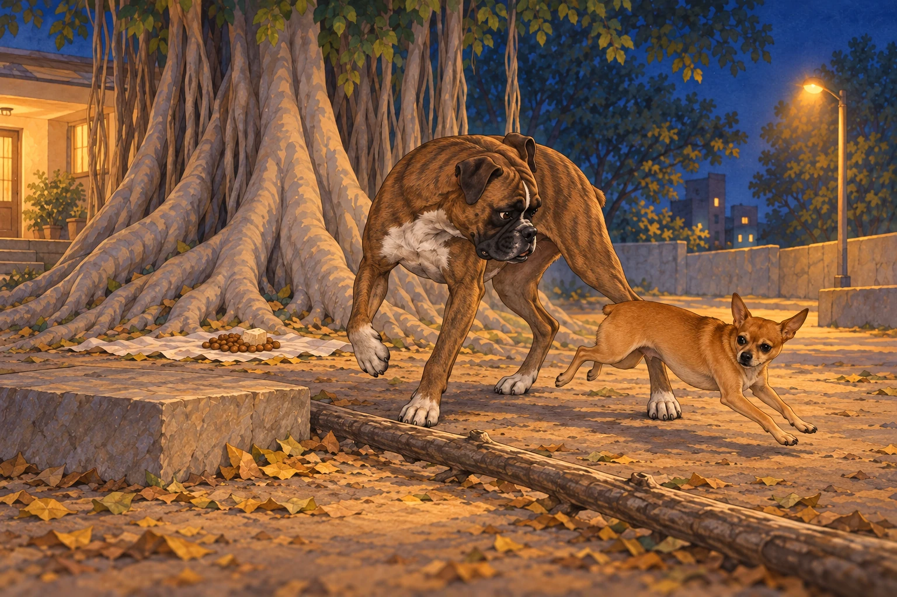
The boxer tried to follow. His paw caught the fallen branch, and he stumbled, recovering with a furious scramble.
“You're not so tough,” Neet barked. “Stay down, or I'll really show you what I'm made of!”
The branch stayed exactly where it was. Neet gave it a quick approving glance. Chikki had been right: it had several useful sides.
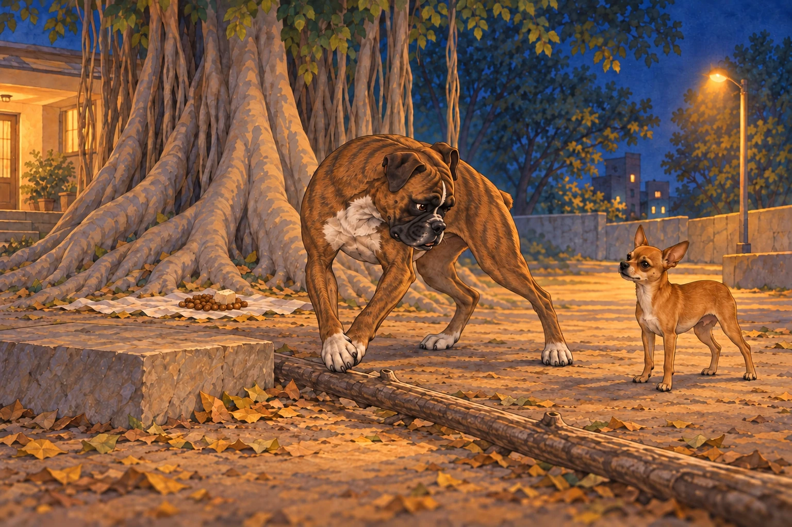
Shadow pressed the mastiff backward over a broad root and managed to pin him. His bared teeth were close to the larger dog's throat.
“Yield,” Shadow growled. “Or leave while you still can.”
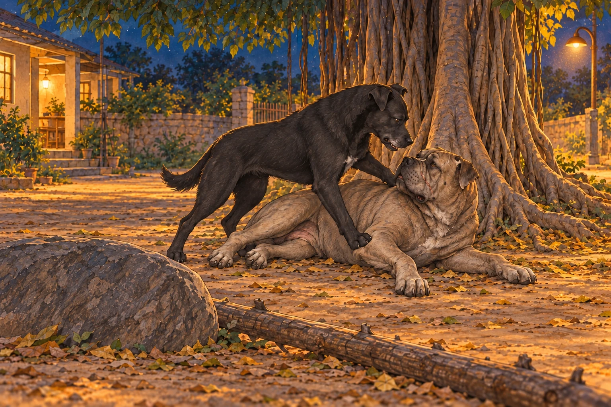
The mastiff snarled, but his gang was being pushed back. The greyhound stood beyond Buddy and Chikki with no food. The boxer had acquired a strong opinion about branches. The hounds were losing room to advance.
The mastiff barked an order to retreat. Shadow released him, and the intruders backed toward the lane.
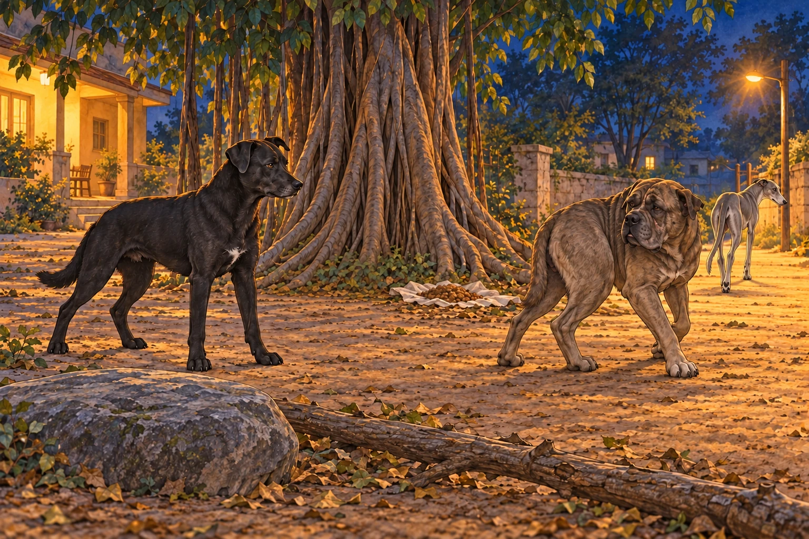
Neet took a triumphant step after them.
“We've still got everyone here,” Buddy called.
Neet looked back. Shadow was breathing hard beside the roots. Chikki stood with Buddy over the cloth. The white dog had a paw lifted while he shook dust from it.
Neet stopped.
“Hold positions!” he barked, turning toward his team. “Let them go.”
The intruders disappeared into the darkness. Nobody followed.
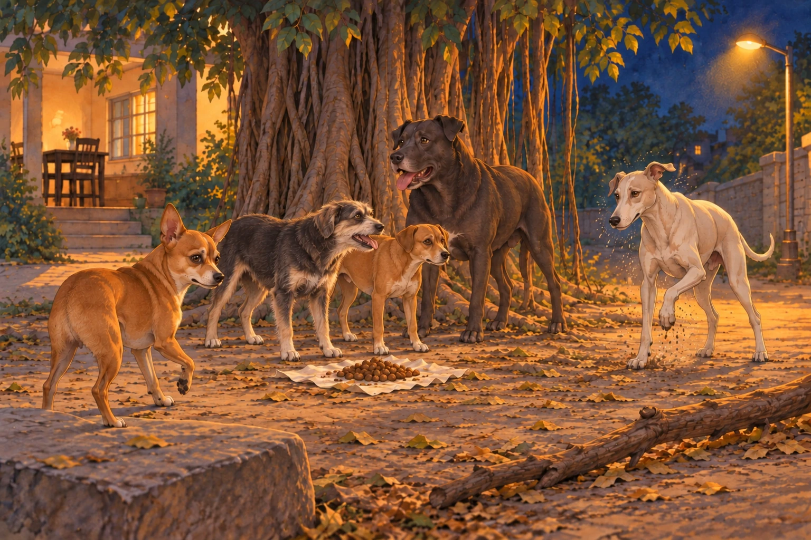
The gang regrouped, panting but victorious. Neet climbed onto his command post.
“Excellent work, team! We showed them what happens when you mess with us!”
Buddy flopped onto the ground. Shadow sat beside him, dusty and breathing hard.
“Food's still here,” Shadow said.
Buddy got up to check with his nose. One corner of the cloth had folded over the stash. He nudged it back. The white dog's biscuit was still there.
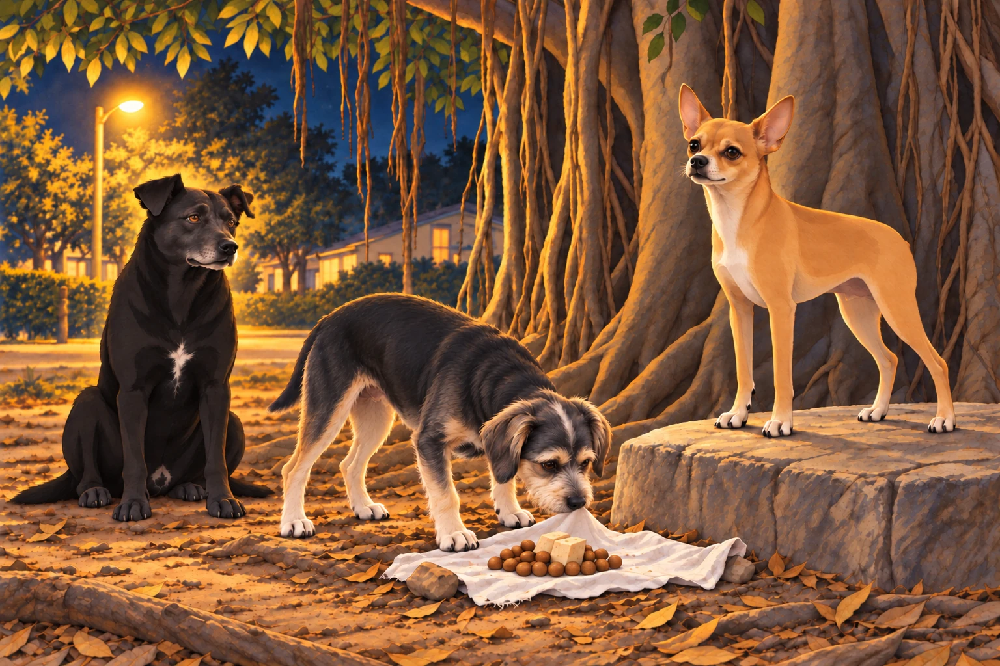
“Of course,” Neet said. “That's why I'm in charge. Now, let's secure the perimeter and check on the food stash.”
Buddy looked up from checking the food stash.
Heather appeared on the porch, holding a flashlight. Its beam passed over the lane, then settled on the disheveled dogs.
“What on earth happened out here?”
Neet trotted up to her and gave a single, confident bark.
“You're unbelievable,” she said, scratching him behind the ears. “I heard you from inside.”
Neet lifted his chin. At last, someone appreciated the range.
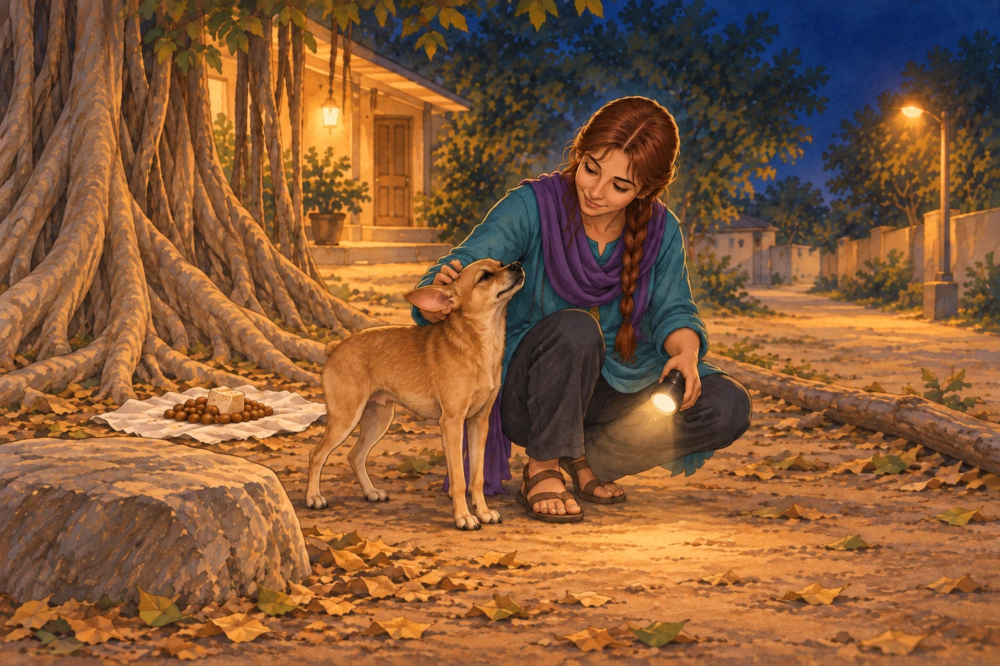
Heather came across to the tree. Buddy pressed against her ankle, and she knelt to check him, then the others, moving the light slowly so each dog could see her hand. Shadow stood patiently while she looked him over. Chikki leaned into the scratch behind her ears before remembering to remain dignified.
“All this fuss,” Heather murmured. “And supper hasn't even finished.”
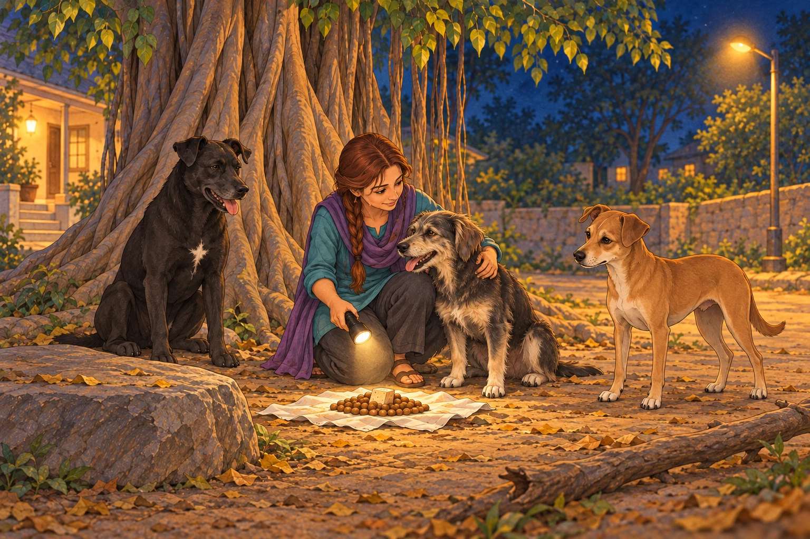
She went back for water. When she returned, the white dog was approaching the cloth. Buddy stepped aside and showed him the biscuit with his nose.
The dog ate it at once.
Buddy watched with immense satisfaction, slightly troubled by how delicious it sounded.
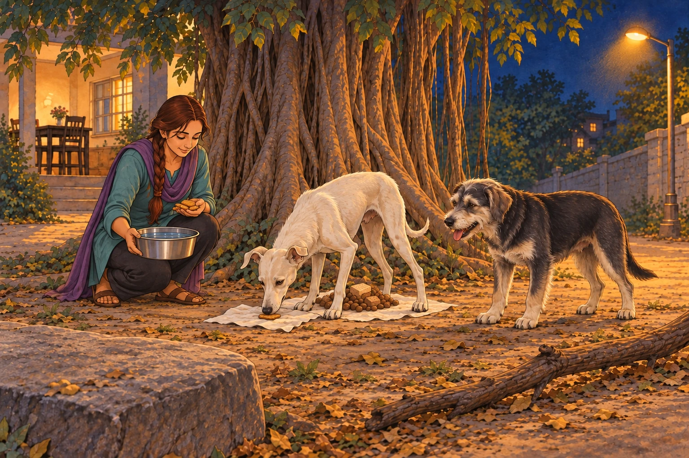
Heather set down the water and broke the remaining food into portions around the roots. Neet had started toward the rock for another announcement. She held out a small piece, and he stopped to accept it.
“Sit with your friends, General.”
He surveyed the portions. Everyone had one. Shadow was waiting beside an empty place.
Neet sat there.
Chikki pushed a broken bit of biscuit toward Buddy. He ate it before any inspection could begin. Heather laughed softly and ran her hand along his back.
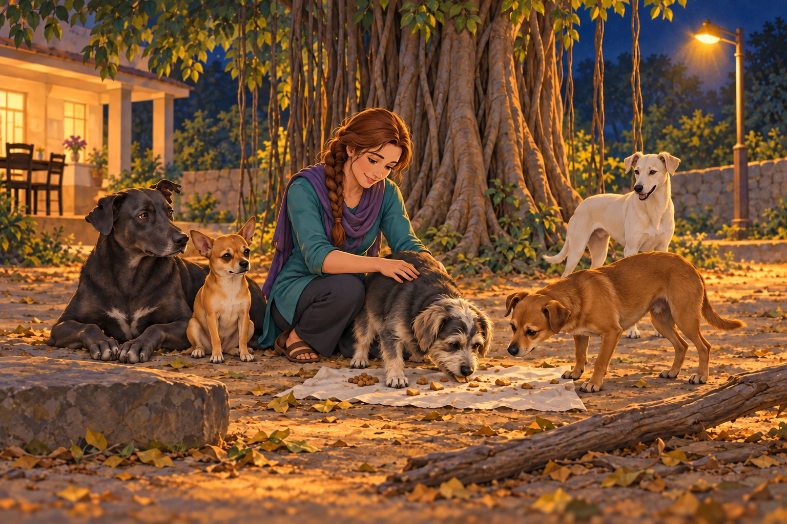
When the food was gone, she gathered the empty cloth and returned to the porch, leaving the water where the dogs could reach it. Neet took the nearer edge of his command post. Buddy stretched out beside Shadow, with Chikki close enough to bump noses.
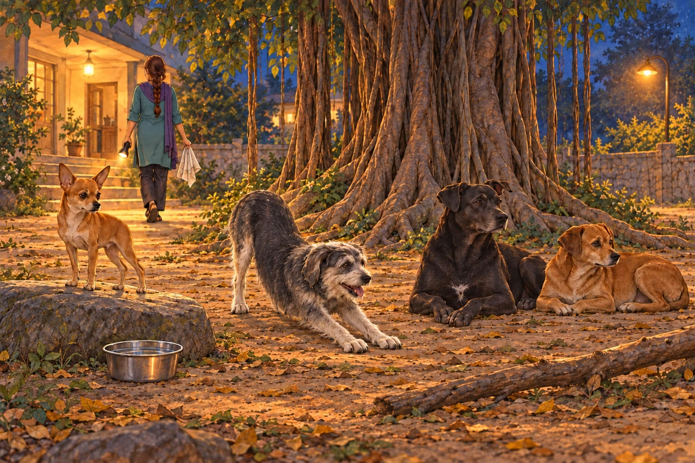
“All secure?” Neet asked quietly.
Buddy checked that Shadow was beside them and Heather was still on the porch. Then he looked at the empty food hollow.
“Yes.”
Neet opened his mouth.
“Still,” Buddy added, and closed his eyes.
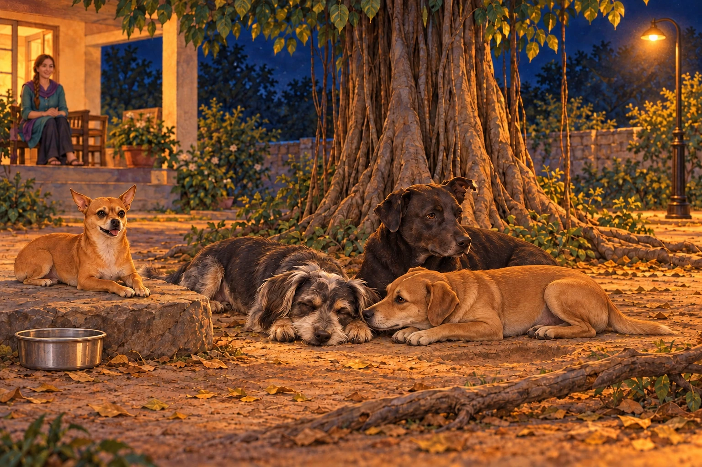